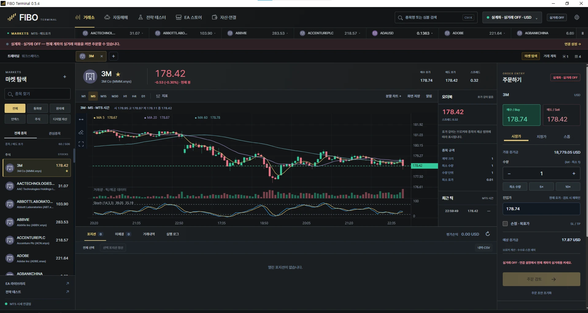
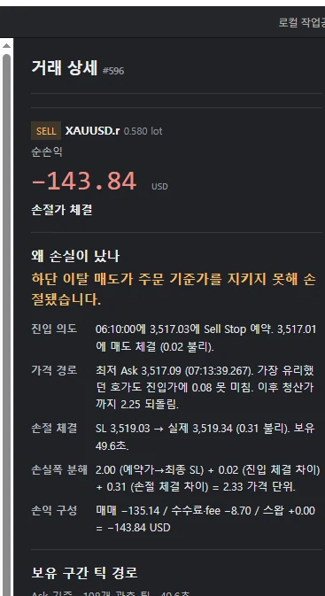
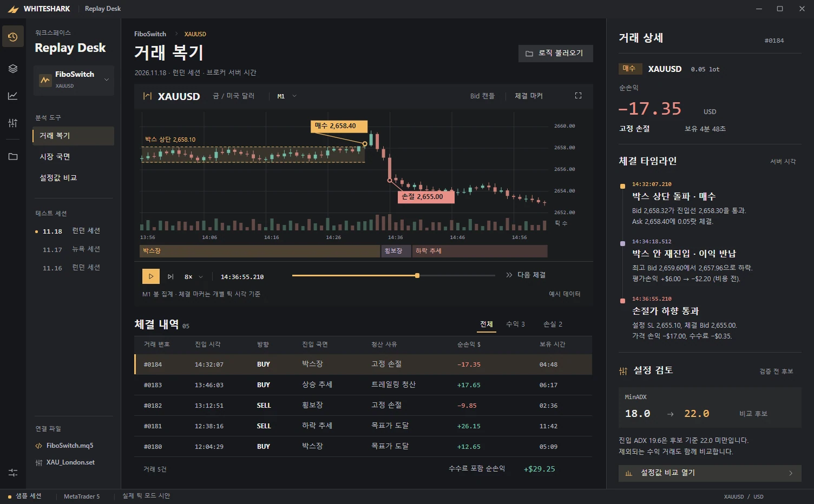
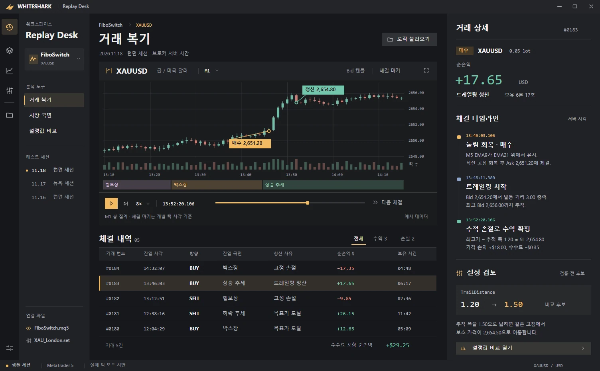
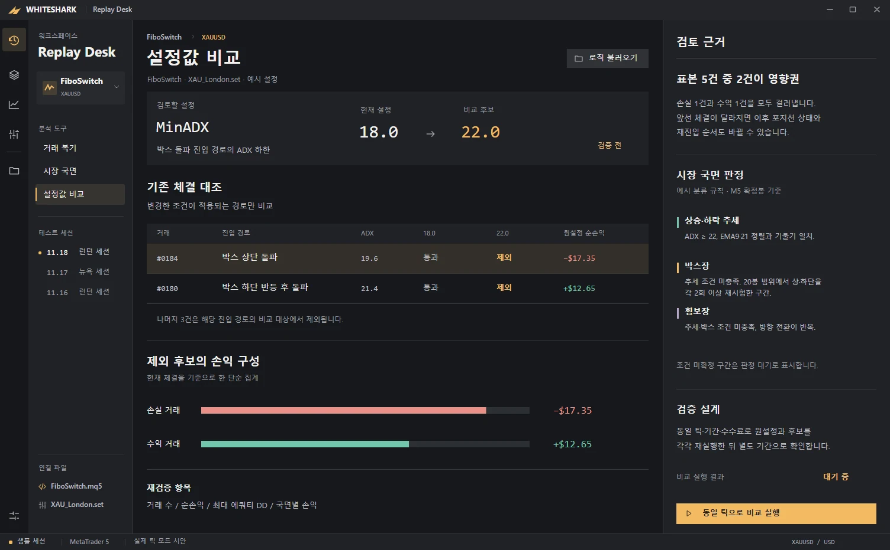
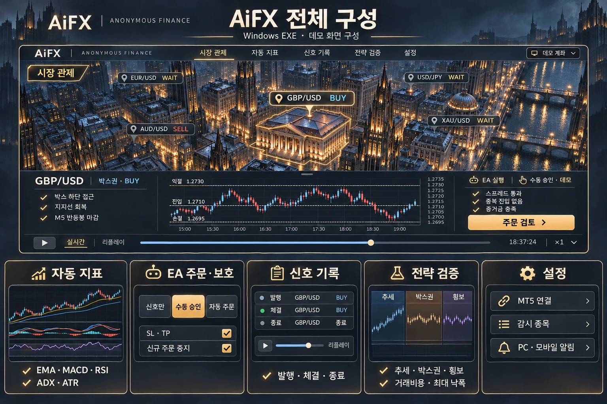
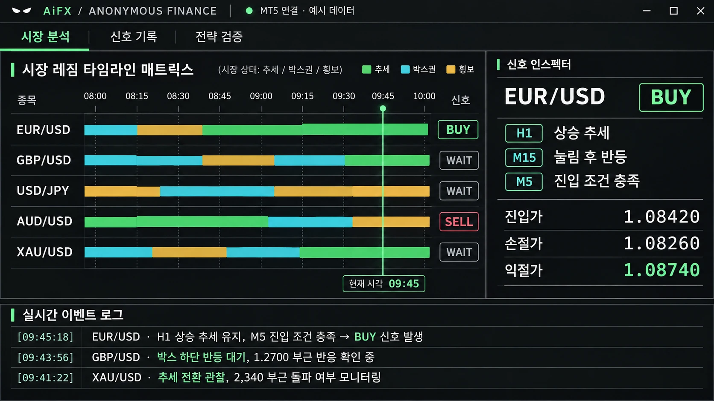
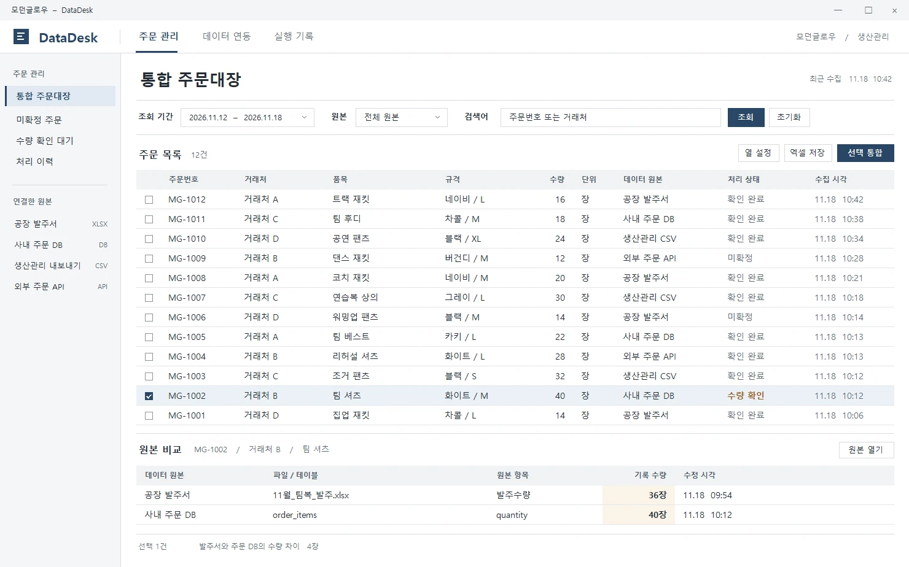
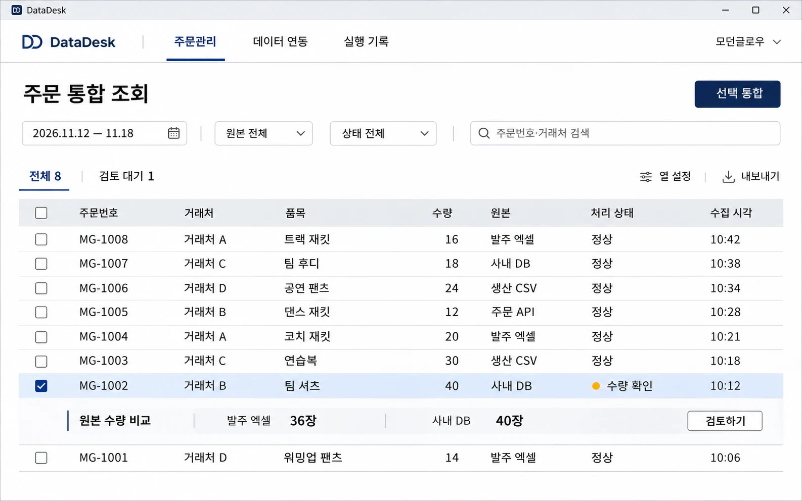

Windows 프로그램
포트폴리오
거래를 검토하는 터미널부터 의류 발주 수량을 대조하는 업무 도구까지, 직접 다룬 프로그램의 실행 화면과 설계 자료를 모았습니다. 이미지를 선택하면 크게 볼 수 있습니다.
FIBO Terminal
종목을 고른 뒤 차트와 호가를 확인하고 주문 조건을 입력하는 거래 터미널입니다. 선택한 종목을 기준으로 왼쪽 탐색 목록, 중앙 차트, 오른쪽 주문 패널이 한 화면에서 이어집니다.


3M의 5분봉을 선택한 상태입니다. 차트 아래에서 거래량과 스토캐스틱을 보고, 오른쪽에서 매수·매도 호가와 주문 수량을 확인합니다.
WhiteShark Replay Desk
자동매매 결과를 다시 살펴보는 Windows 도구입니다. 거래 한 건을 골라 진입 의도, 실제 체결가와 보유 중 가격 경로를 대조하는 흐름을 설계했습니다.


하단 이탈을 예상한 매도 사례입니다. 진입가, 최저가, 손절 체결가와 수수료를 한 패널에 모아 손실이 발생한 경로를 읽을 수 있습니다.


거래 목록에서 손실 건을 선택하면 차트의 진입·청산 지점과 오른쪽 분석 내용을 함께 보도록 설계했습니다.


손절 사례와 같은 배치에서 수익 구간과 청산 시점을 비교하는 화면입니다.


기존 값과 제안 값을 나란히 배치하고 변경 근거를 확인한 뒤 다음 테스트로 넘어가도록 구성했습니다.
AiFX
시장 선택과 신호 확인, 주문 검토를 하나의 거래 도구로 구성한 프로젝트입니다. 아래 이미지는 화면 구상을 보여 주며, 실행 파일 3종의 형식은 별도로 확인했습니다.


거래 화면과 자동 지표, 주문 보호, 신호 기록, 전략 검증, 설정의 관계를 정리했습니다.


시세와 지표를 살피는 작업 공간의 화면 구상입니다.
EXE 파일 구조 확인
보관한 세 빌드의 Windows PE 헤더를 읽어 실행 형식과 섹션 수를 비교했습니다.
| 빌드 | 형식 | 섹션 |
|---|---|---|
AiFX_v01.exe | 64비트 GUI | 4 |
AiFX_v02_x64.exe | 64비트 GUI | 5 |
AiFX_Native_v01_x64.exe | 64비트 GUI | 11 |
DataDesk
의류 주문을 관리하며 엑셀 발주서와 사내 대장의 수량을 일일이 대조했습니다. 담당자가 차이 나는 주문을 찾아 두 원본을 확인하는 과정을 화면으로 옮겼습니다.


주문을 선택하면 아래쪽에 두 원본을 나란히 표시해 어떤 값이 다른지 확인할 수 있습니다.


발주 수량 36장과 사내 수량 40장의 차이를 보여 주는 예시입니다. 같은 화면에서 처리 상태와 확인할 주문을 볼 수 있습니다.